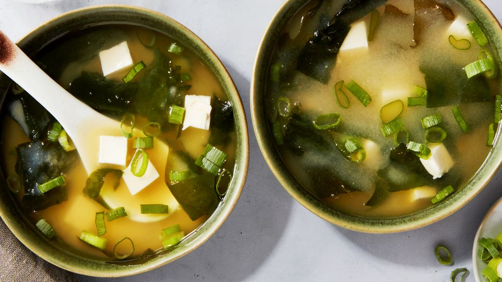

Miso Soup

Essentially, miso soup is just miso paste whisked into a dashi. Dashi is the Japanese word for stock—the most iconic type of dashi is made of kombu (dried kelp) and bonito flakes (smoked, dried tuna flakes). You can buy a powdered mix to make dashi, but if you’re able to get your hands on the real ingredients, you’ll have a more flavorful, intense stock.
Ingredients
- 4 cups water
- 2 teaspoons dashi granules
- 3 tablespoons miso paste
- 1 (8 ounce) package silken tofu, diced
- 2 green onions, sliced diagonally into 1/2 inch pieces
Steps
- Combine water and dashi granules in a medium saucepan over medium-high heat; bring to a boil. Reduce heat to medium and whisk in miso paste. Stir in tofu. Separate the layers of green onions, and add them to the soup. Simmer gently for 2 to 3 minutes before serving.